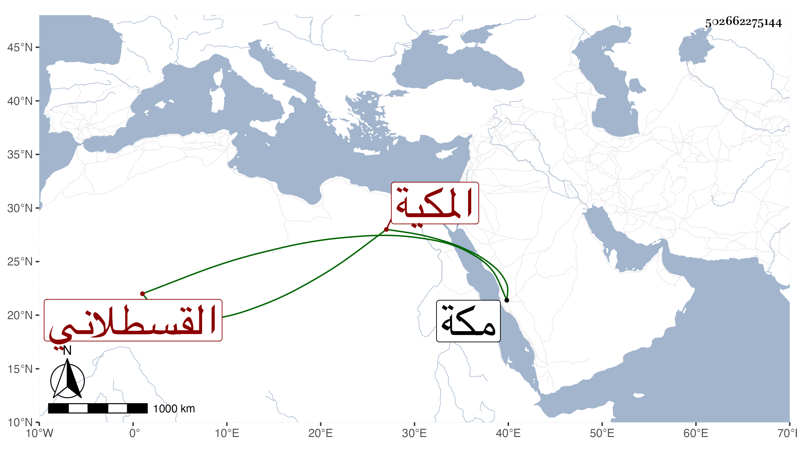

0902Sakhawi.DawLamic.ITO20230111-ara1.EIS1600.502662275144
Biography ID: 502662275144
390
سعادة ابنة أبي البقاء محمد بن عبد الله بن أحمد بن حسن بن الزين محمد ابن الأمين محمد بن القطب القسطلاني المكية . أجاز لها في سنة ست وثلاثين جماعة وتزوجها أبو القسم بن محمد بن علي الفاكهي فولدت له محمدا وغيره ومات فتزوجها أخوه أبو البركات وغيره ثم عبد القادر بن النويري . وماتت تحته بمكة في ليلة السبت سابع عشر المحرم سنة اثنتين وتسعين .
